Scomparsa dell'infanzia
童年的消逝
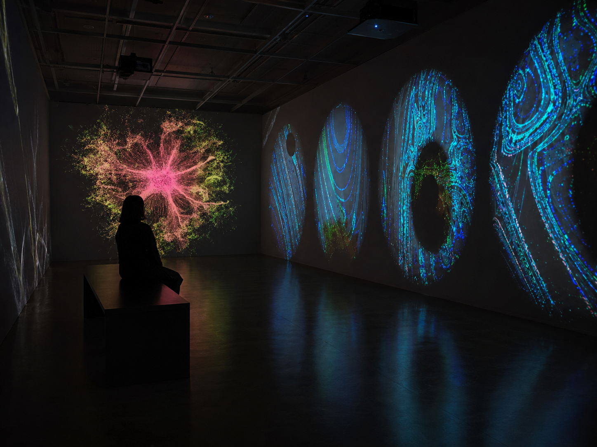
Project Introduction
《童年的消逝》是一件围绕儿童认知、媒介环境与数字图像关系展开的互动装置作品。项目关注当儿童持续接触屏幕、网络图像与数字媒介后，现实经验与虚拟信息之间的边界如何逐渐发生变化。作品通过 TouchDesigner 构建实时视觉系统，将观众的操作转化为图像状态、运动、失真与模糊等视觉变化，使观看者直接参与作品的生成过程。
Background
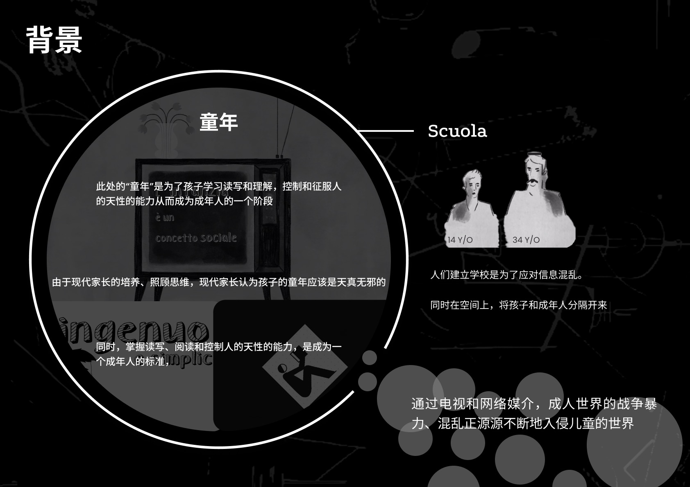
项目的前期研究围绕儿童成长环境、媒介使用方式与视觉认知展开，并尝试梳理数字媒介进入儿童日常生活之后，对认知方式、信息接收和成长经验所产生的变化。
Media Impact
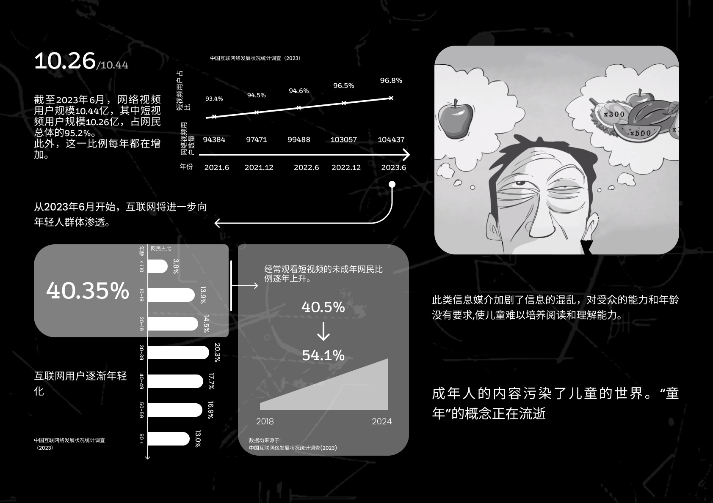
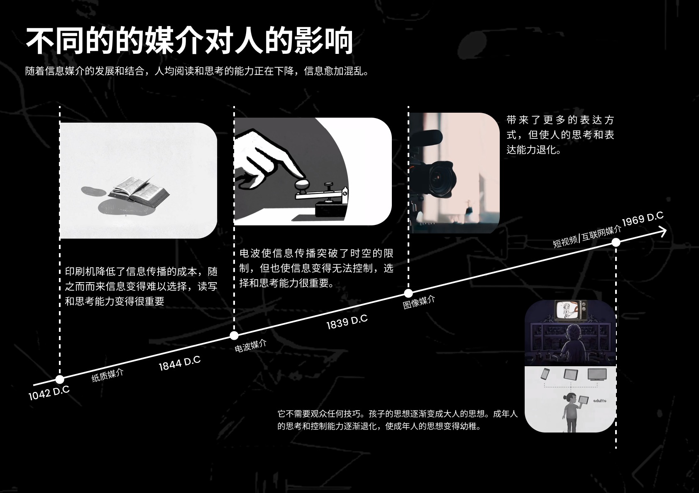
数字媒介已经深度进入儿童的日常生活。屏幕、短视频、游戏与网络信息不断改变儿童获取信息和理解世界的方式，同时也让现实经验与虚拟内容之间的边界变得更加模糊。项目通过前期研究梳理这些变化，并将其转化为后续作品中的视觉与交互线索。
Design Development
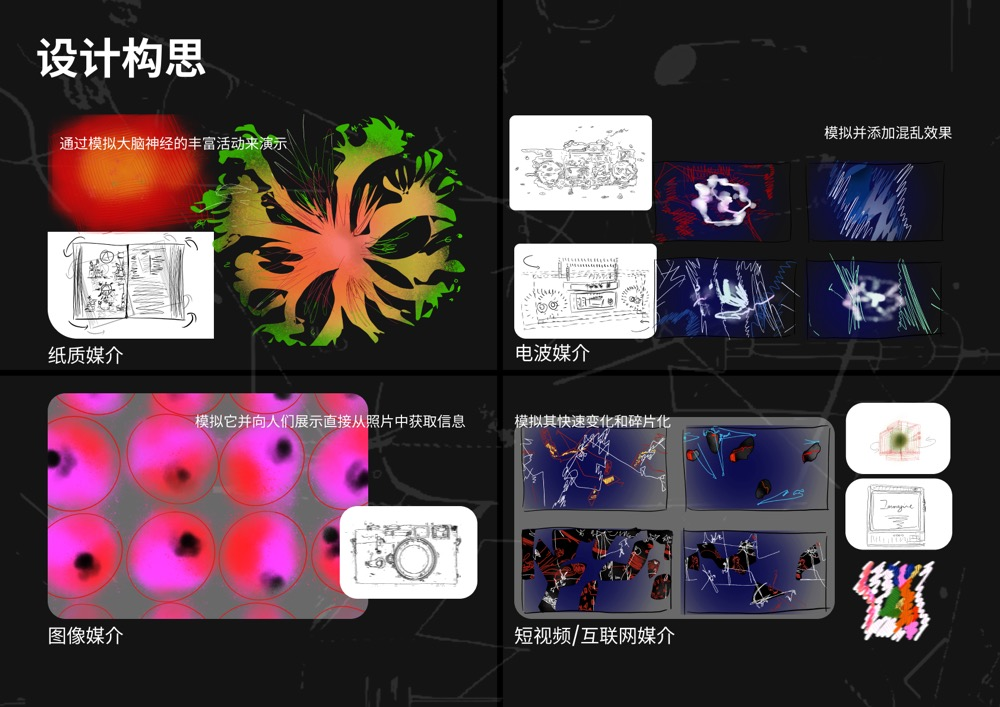
设计阶段主要围绕视觉元素、交互方式与空间呈现之间的关系展开。通过草图与系统结构梳理，将儿童、媒介信息、图像干扰与实时生成逐步整合为统一的交互体验。
Interaction Principle
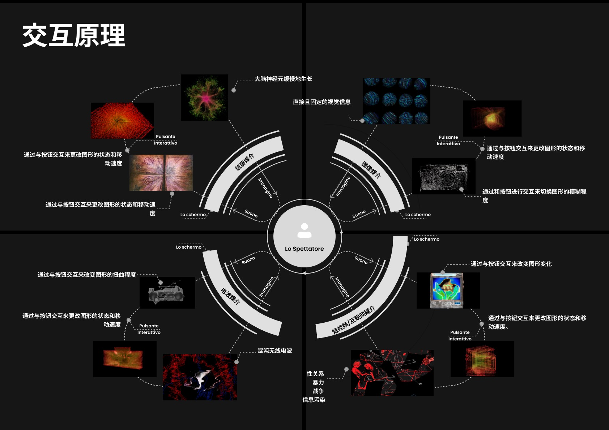
作品通过实体控制与 TouchDesigner 实时视觉系统建立互动关系。观众的操作可以改变图像状态、运动速度、失真程度、模糊与视觉效果，使原本固定的影像不断发生变化。最终画面并不是预先播放的单一结果，而是在观众参与过程中持续生成。
Final Installation
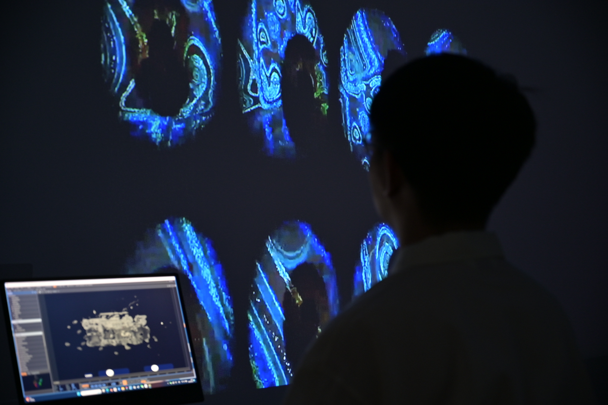
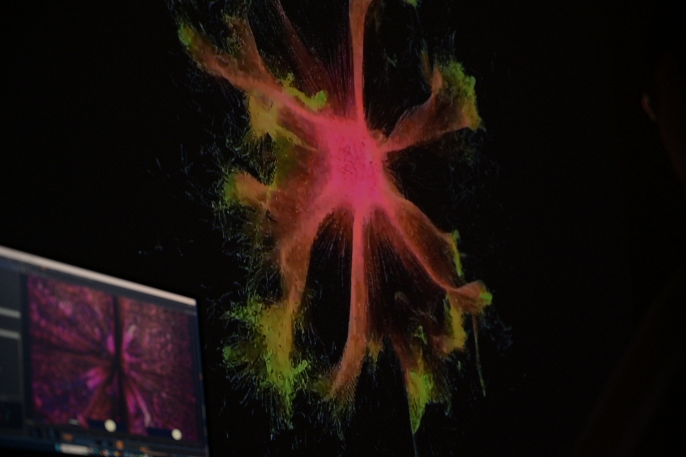
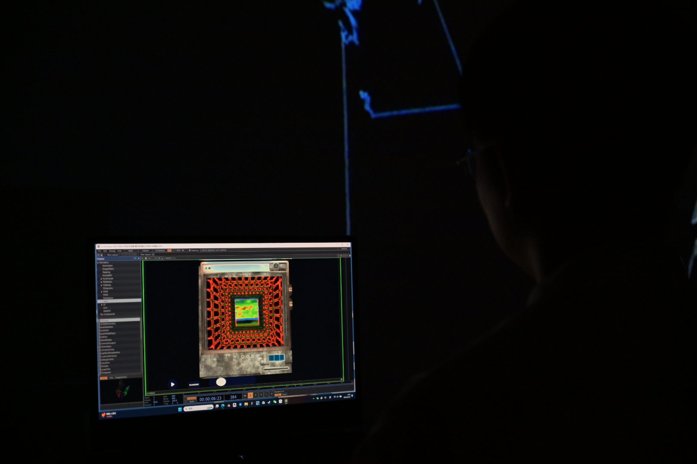
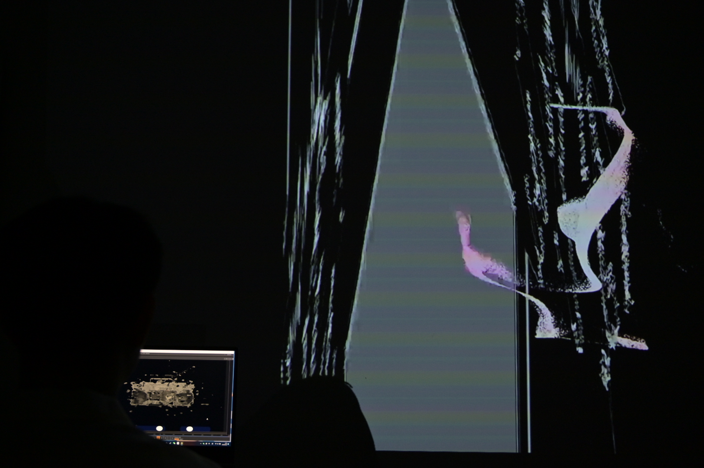
最终装置将实时生成的视觉内容、交互设备与空间环境结合，使观众的操作直接成为作品视觉变化的一部分。
Virtual Exhibition
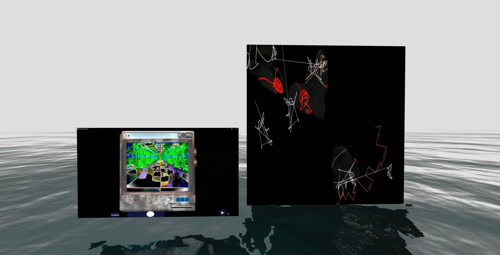
虚拟展览部分进一步模拟作品在展示空间中的观看关系，用于呈现影像尺度、装置位置与观众观看距离之间的空间效果。